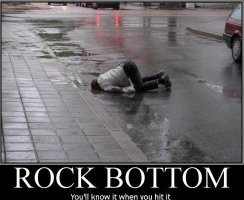

Right now, on my computer, Chrome is using 1.2GB of RAM with 3 tabs open. After 20 tabs, it’s hovering around 3GB. Back in the bad old days, I would easily have 30 tabs open at any given moment, and sometimes another 15–20 in other windows.
My name is Jacob, and I am a tab addict.
One particularly hot day my computer just turned itself off in a moment of kernel panic. I had hit rock bottom.
err… no more like this:

Then I discovered Tab Wrangler and started making amends with my poor abused ‘puter.
I didn’t really need those tabs open, I was just hording because I didn’t want to deal with deciding if I cared. Turns out I didn’t really, and you don’t either.
Tab Wrangler is a Chrome extension, originally written by Jack Angers in 2010. Here’s how it works:
- Auto-closes tabs which have been inactive for a certain amount of time
- You configure how long to wait before closing them, and how many tabs is an ideal amount
- If a tab is closed, Tab Wrangler saves it in its own history so you can get it back
- What about pinned tabs? Or tabs you never want to close? Yep, handles that too, you can whitelist tabs or domains as evergreen and they will never be closed
I liked it so much, I decided to add some new features, but in the process I realized the code could use a refresh, so I did a full re-write. Trust me, this will make your life a lot less cluttered and your computer faster.
So if you can only see the icons on your tab bar right now, go Download Tab Wrangler
TabWrangler is licensed under the MIT license and you are free to fork it on github
Originally published at http://www.jacobsingh.name on July 8, 2012.